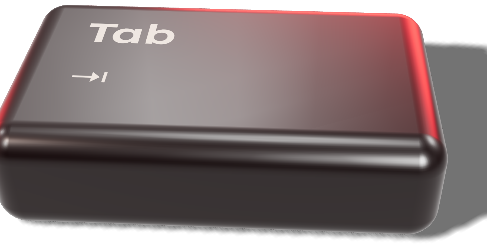

TAB01/06
TAB01/06
Acessibilidade digital · Desafio
Dois minutos
sem rato
no seu site.
TAB01/06
TAB02/06Abra um formulário real do seu site e preencha-o só com o teclado.
TAB03/06Carregou no Tab e nada se vê. Acontece quando o código apaga o contorno:
TAB04/06Em quase todos os sites. A barreira raramente está na pessoa — está no que desenhámos.
TAB05/06
TAB06/06Faça o teste no seu site e conte-nos nos comentários. Se quiser saber o que corrigir primeiro, analisamos o seu site.